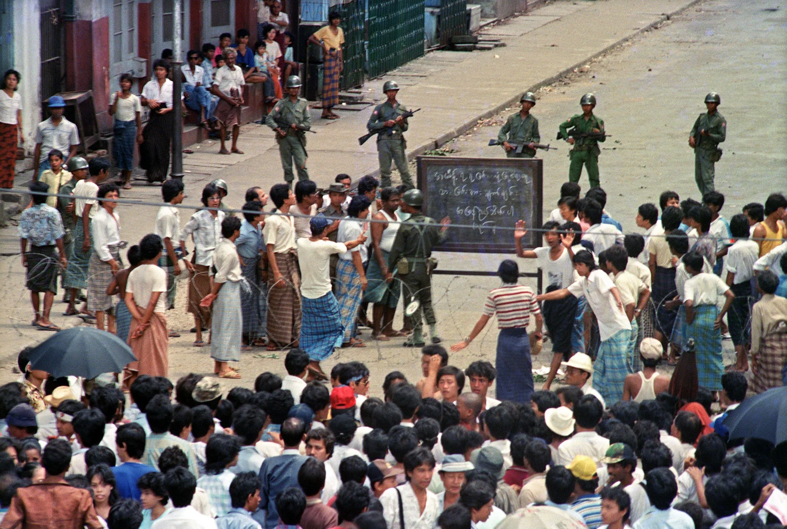
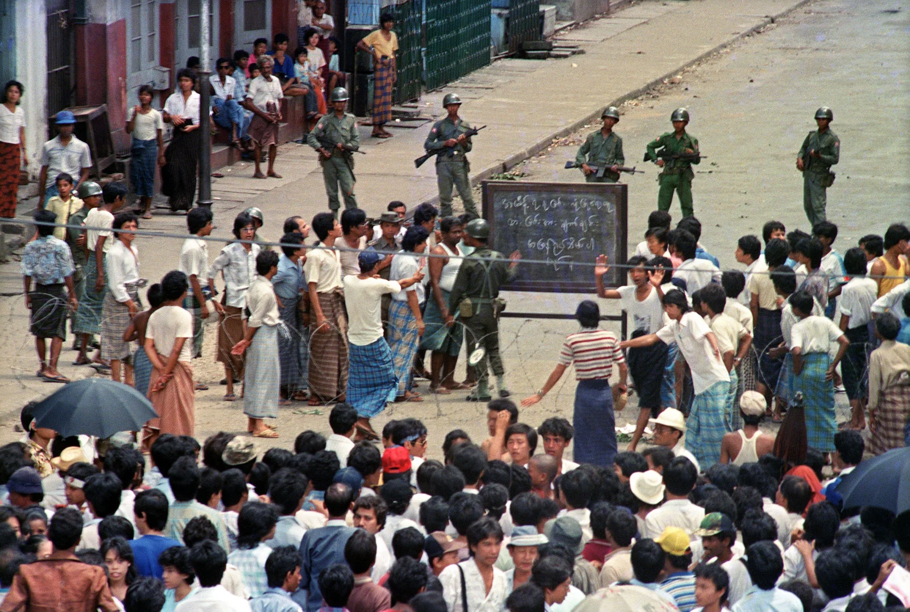

Rhetorical Situation
Aung San Suu Kyi was born into a politically prominent family; her father was a hero of Myanmar's independence, while her mother served as the country's ambassador to Delhi (Aung San Suu Kyi: Myanmar democracy icon who fell from grace). She traveled to study abroad and came home in 1988. To advocate for democratic transformation and free elections, Suu Kyi organized rallies and traveled the nation. Yet after the army took over in a coup on September 18, 1988, the protests were brutally put down. The following year, Ms. Suu Kyi was placed under house arrest after recently canceling a planned march by 100 opposition groups due to the fear of military violence, as many lives had already been lost during prior protests (Staff). In May 1990, the military administration called for elections, which Ms. Suu Kyi's NLD (National League for Democracy) easily won. However, the junta resisted giving up power. This prompted Suu Kyi to make her well-known speech, “Freedom from Fear”. The purpose of her speech was to encourage the Burmese citizens to continue being courageous and resilient as they fight for a democratic government. She explains how they should act out of courage as opposed to fear. Since the speech was directed towards Myanmar and its citizens, the audience mostly had one collective mentality, and although its freedom organizations are separate, they’re connected by ideologies. Since the subject is opposition to the militaristic government, and everyone has experienced hardships living under such an oppressive government, the audience has had many first-hand experiences dealing with the government. 8/8/1988 was a major day in Myanmar’s history, with one of the country’s largest protests held that day, with violence by the government present throughout all the protests throughout the country.